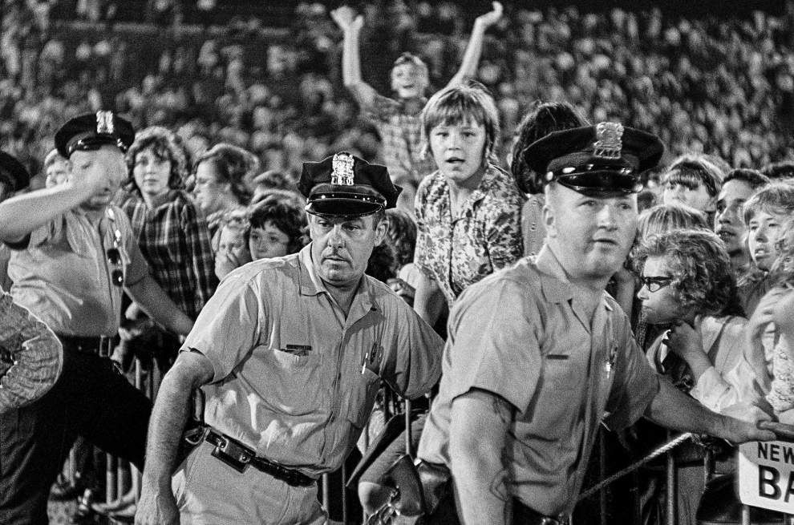

"I had field-level seats and could actually see them without the aid of binoculars. Also, there were more male fans. These factors resulted in less noise. Although the conditions were still less than ideal, I could hear The Beatles sing and play."
CITY PARK
NEW ORLEANS
1964
CALMING
'EIGHT DAYS A WEEK'